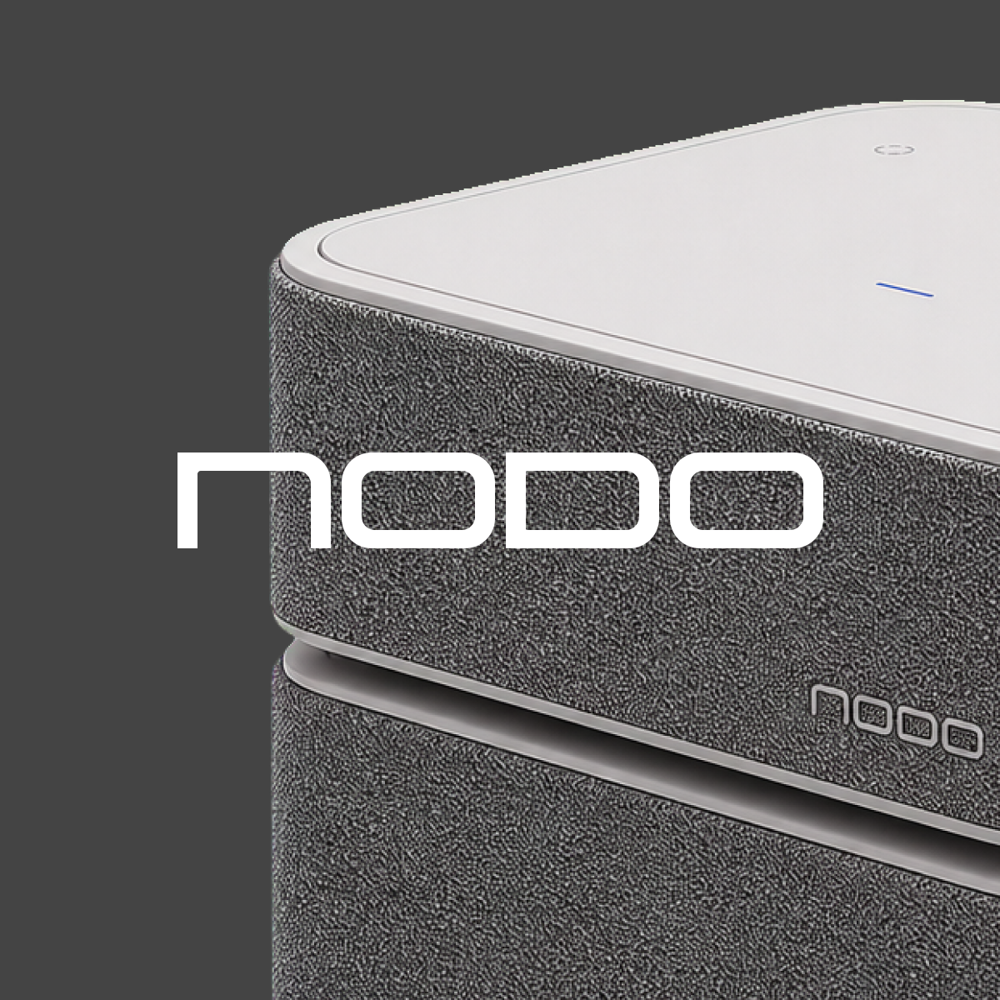
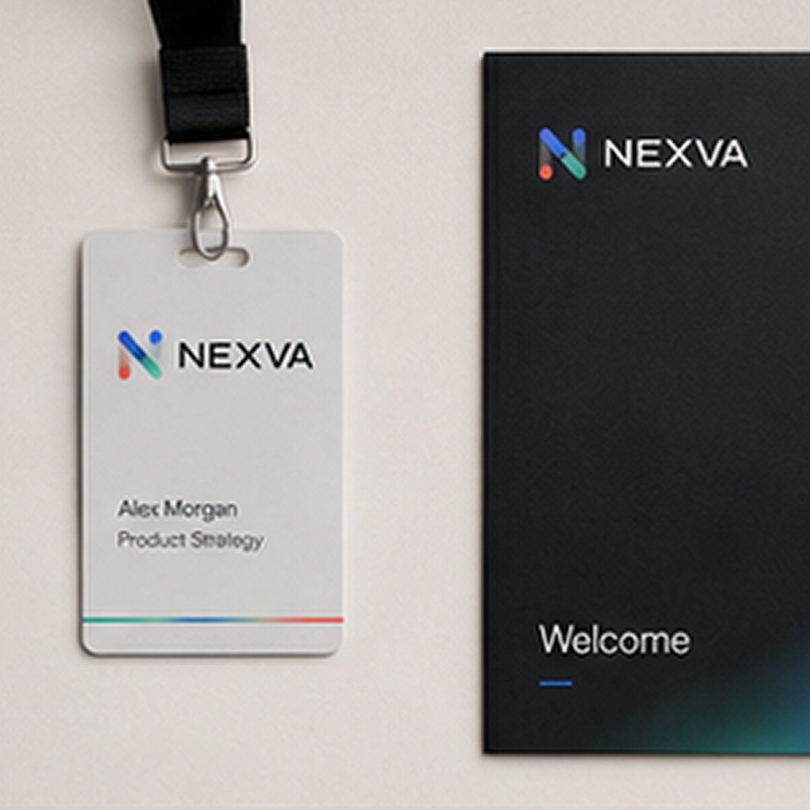
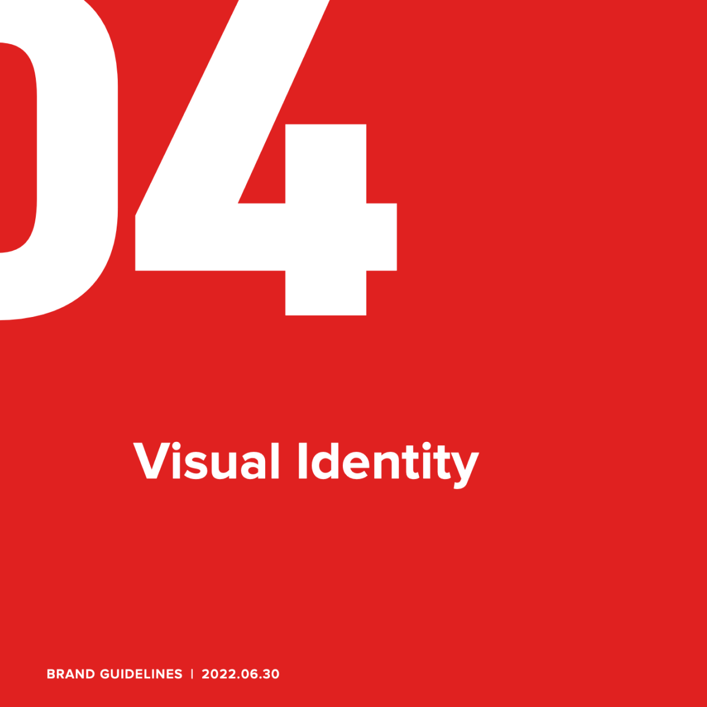
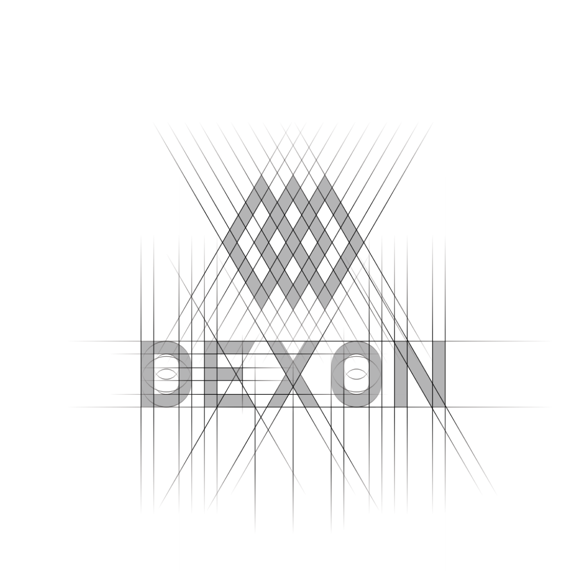
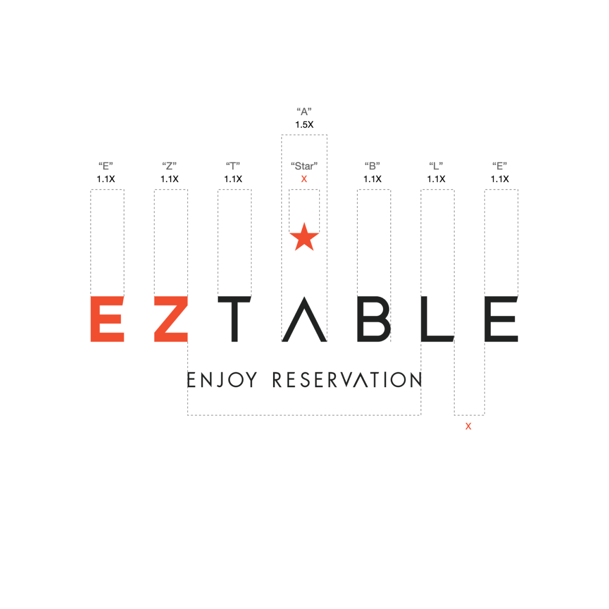

20 年設計實務經驗
DESIGN LEADERSHIP · BRAND STRATEGY
設計品牌， 也設計影響力。
我是古仲文，一位橫跨品牌、產品與體驗的設計領導者。我將策略轉化為看得見、易理解，並能推動成長的設計系統。
關於我
About
從策略、系統到上市，讓設計成為團隊共同使用的語言。
過去二十多年，我在音樂科技、金融科技與 O2O 服務領域，帶領跨領域團隊打造品牌與產品體驗。工作範疇涵蓋硬體、軟體、零售、國際展會與整合行銷。
我曾與美國、德國、中國、日本及台灣團隊跨國協作，並將生成式 AI 導入創意流程，在效率與品質之間建立可長期運作的設計營運模式。
影響力數據
Impact in numbers
12 年設計領導經驗
導入 AI，製作時間縮減
COBINHOOD 全球交易所排名
精選作品
Selected work
從品牌、產品到數位體驗。
精選橫跨音樂科技、金融科技、餐飲服務與國際品牌的作品。點擊專案即可瀏覽完整內容。
Brand System Concepts
自發性 CIS 與品牌系統實驗

Commercial Work
真實品牌、產品與全球上市工作Product / UI Experience
實際上線產品、介面與服務體驗Legacy Digital Work
早期網站、活動與品牌數位設計
核心經歷
Leadership Experience
建立能持續成長的品牌生態。
2003 — 2026
POSITIVE GRID
Design Manager Global Brand & Product
主導 Spark 軟硬體產品生態的視覺策略，串聯產品介面、包裝、零售與全球上市活動。建立跨國協作流程，並將生成式 AI 導入創意製作。
- Challenge
- Spark 產品生態橫跨硬體、軟體、電商、零售與全球上市活動，需要在多市場、多團隊、多接觸點中維持一致。
- Role
- 主導品牌與視覺策略，串聯產品 UI、包裝、網站、零售陳列、上市活動與跨國設計審核流程。
- System
- 建立 Spark 品牌與行銷視覺系統，讓素材能在產品、活動、電商與不同市場中延展使用。
- Impact
- 支援全球 Spark 產品上市與長期行銷節奏，並將生成式 AI 導入創意探索與製作流程，提高跨團隊產出效率。

品牌規範 · 54 頁 Positive Grid 查看完整規範COBINHOOD / DEXON FOUNDATION
Art Director Brand & Digital Product
統籌加密貨幣交易所與公鏈的雙品牌策略，將複雜技術轉譯為直觀體驗。主導交易平台、錢包、區塊鏈瀏覽器與國際活動設計，並榮獲 2018 紅點傳達設計獎。
- Challenge
- 加密貨幣交易所與公鏈技術門檻高，需要把交易、安全、錢包與區塊鏈產品轉譯成可信任且容易理解的體驗。
- Role
- 擔任 Art Director，統籌雙品牌策略，主導交易平台、App、錢包、區塊鏈瀏覽器與國際活動設計。
- System
- 建立可同時支撐品牌、產品介面、活動與技術溝通的視覺語言，讓艱深內容更有結構。
- Impact
- COBINHOOD App 獲 2018 Red Dot Communication Design Award，品牌與產品設計支援全球交易所成長。

品牌規範 · 2019 · 29 頁 DEXON 查看完整規範EZTABLE
Design Team Lead O2O Product Experience
由 Senior Designer 晉升為 Design Team Lead，整合網站與行動裝置的 O2O 體驗，建立企業識別與品牌規範，支援台灣及海外市場。平台服務超過 120 萬名會員，累積超過 1,000 萬筆線上訂位。
- Challenge
- 餐廳訂位服務需要同時支援網站、App、品牌行銷與海外市場，並讓使用者在探索、預訂與管理流程中保持一致體驗。
- Role
- 由 Senior Designer 晉升 Design Team Lead，負責企業識別、品牌規範、網站與 App 體驗整合，以及團隊設計管理。
- System
- 建立品牌識別與規範，統一 O2O 服務在產品介面、行銷活動與跨市場溝通中的視覺與體驗。
- Impact
- 支援台灣與海外市場，平台服務超過 120 萬會員並累積超過 1,000 萬筆線上訂位。

品牌規範 · 2016 · 16 頁 EZTABLE 查看完整規範
能力脈絡
Capability Narrative
現在做策略與領導，來自早期實作基礎。
設計領導
跨部門團隊管理、敏捷設計營運、跨國協作
品牌策略
企業識別系統、整合行銷、品牌與產品生態
科技整合
生成式 AI 工作流、UI/UX 策略、軟硬體體驗
空間體驗
國際展會、品牌活動、視覺陳列與零售體驗
早期經歷
從視覺設計、網站到品牌與產品，建立跨媒介的實作基礎。2012 — 2013
KAMIA
Product Designer
品牌規劃與官方網站設計。
2011 — 2012
AGENDA
Senior Designer
活動網站與品牌數位體驗設計。
2008 — 2011
UNI-NET
Senior Designer
視覺設計與網站設計。
2003 — 2008
ARTIE 亞惶廣告
Designer
平面、網站與多媒體設計。
AI 設計智慧
AI × Design Intelligence
工具降低門檻，品味決定高度。
我以傳統設計為扎實基礎，從手工製作、數位工具一路走到生成式 AI。現在，我將各種 AI 工具與 Agent 導入研究、策略、視覺探索及製作流程，讓想法更快獲得驗證，也讓團隊能把更多時間用在真正重要的判斷。
AI 讓設計更容易開始；經驗與品味，決定作品最後能走多遠。
AI 創意工作流
將生成式影像、文字與自動化工具整合進設計流程，縮短探索與製作時間。
AI Agent 協作
運用 AI Agent 支援研究、規劃、內容與執行，建立更敏捷的跨職能協作模式。
品味與決策
在大量產出中辨識真正有價值的方向，以品牌脈絡、文化敏感度與商業目標做出判斷。
GENERATIVE AI
AI AGENTS
MIDJOURNEY
ADOBE FIREFLY
LLM WORKFLOWS
AUTOMATION
合作品牌與客戶
Selected brands & clients
EXPERIENCE · TASTE · JUDGMENT
經驗累積的不只是方法，更是成熟的品味與精準的判斷。
以品牌、產品與視覺設計的領導經驗，協助團隊做出更清晰、更有價值的設計決策。
品牌與設計顧問
專案設計合作
獨立設計委託
TAIPEI, TAIWAN · AVAILABLE FOR GLOBAL COLLABORATION
版本 2026.07.02-14
BRAND · PRODUCT · CREATIVE LEADERSHIP
© KU CHUNG-WEN